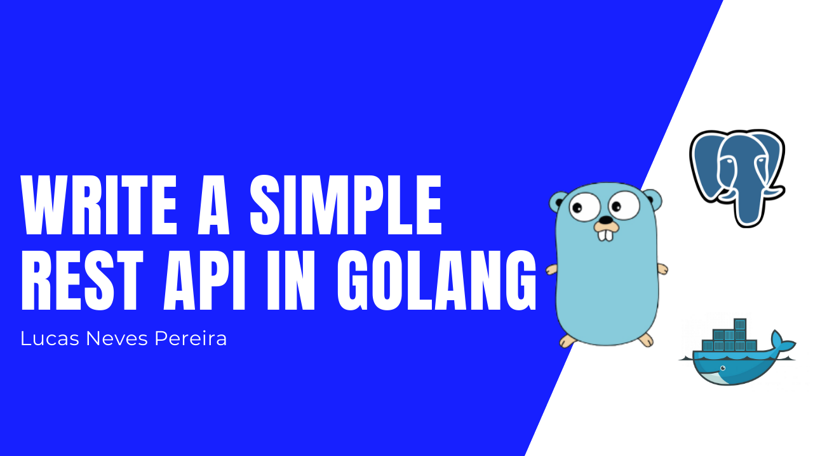

Write a Simple REST API in Golang

Hello there 😀
In this brief article I will explain how I write a REST API using Golang trying to follow some best practices.
The source code to follow along if needed is here.
Let’s do this 👍🏻
As an example we’ll be creating a very simple Post API.
Structure the project
Let’s jump to our terminal and create a new directory for our project and then init a go module.
mkdir postapi
cd postapi
go mod init postapi
Note: Best practice for module naming is to use <domain>/<nameOfApp>
Now that we have this let’s open our project in our favorite code editor and create a main.go file with a package main. This will be the entry point of our application.
Next, create a package app with a app.go file

Inside of it we are going to create an App struct that will represent the structure of our app. There will be two fields on this struct, our app is going to have a DB and a Router. The router will be a gorilla/mux router, so let’s go ahead and and import it:
go get -u github.com/gorilla/mux
Let’s add it to our struct

Now we are gonna create a New() func that will be in charge of returning the actual application based on our struct.

Now in our main.go file we can call this function and create a new app.

Okay, the entry point of the app is structured, let’s continue with the routing.
Routing
Let’s use the Router of our App that we defined before to implement basic routing.
In our app.go file we are going to create an InitRoutes func that will be called inside of our New() func when we create the application. This function will be a receiver of our App. Actually a lot of our methods we will be receivers from our app from now. Since our Router fields in our struct App is of type gorilla/mux router we have access to it’s methods.

Let’s very quickly replace the nil with a simple handler for our index route. For that create a handlers.go file in our package app. This is where we are going to store the handlers for our routes. I am going to create an IndexHandler() handler that will return an http.HandlerFunc printing a response “Welcome to Post API”.

Now let’s call this handler in our route.

Perfect, to test this out, we need to go back to the main.go file to serve the app on a port of our choice and the redirect it to our app Router. Also I’ve made a check function to print help with error handling.

Ok, now we can run our app with go run main.go and curl the endpoint to see if we get a response.
curl http://localhost:9000

Cool, routing seems to be working!
Database
It is time to setup our database, I have chosen to go with PostgreSQL, to avoid local setup I’ll be running my database on a Docker container.
I’ll be using the following command:
docker run --name postapidb --env POSTGRES_PASSWORD=postgres -p 5432:5432 -d postgres
Note: To stop you just need to run docker stop postapidb and to remove it docker rm postapidb
Okay, now we have a database running let’s jump to the code and create a new package database inside of our app package.
Let’s create a db.go file and inside we are going to have an interface. I am going to call it PostDB, this interface it’s like a contract (methods to implement) that we have to respect if we want our database to be a PostDB database. Let’s start by saying that a PostDB should implement a Open() and a Close method that can return an error.
We are also going to have a DB structure like for our app that will have a single field db of type sqlx DB that is like a superset of database/sql from the Go standard library. Let’s run a go get for sqlx and lib/pq (postgres sql driver) and then implement this.
go get -u github.com/jmoiron/sqlx
go get -u github.com/lib/pq

Now before writing the body of our Open() and Close() we can add a database fields to our App struct in app.go saying we are using a PostDB in this app 🙂

Moving on, starting with our Open method let’s open a new connection to our postgres database.

To establish this connection, the second argument of the sqlx.Open() method is a postgres connection string. Let’s build this string in a seperate file called config.go still in the database package.


Another thing I want to do is create a SQL schema that will be run after the connection. This schema will just create a table posts in our db in case there is not one. Let’s add this to a schemas.go file.


Our Close method will be a lot simpler. We just need call the method Close from sqlx

Before writing some methods for our data, let’s jump to the main.go file and init the connection to the database.

Let’s run go run main.go

The database is configured but is not quite finished because I want to implement some methods (like CreatePost and GetPosts) but for that we first need a Post Model.
Models
Go ahead and create a new package models inside of the app package and create a post.go file. Inside of it we are going to have a Post struct with 4 fields.

Since this is a REST API we are later going to be mapping our responses to JSON and sometimes the fields from our database might not correspond to our json fields or maybe we want to have flexibility to add new fields or remove fields. For that, let’s already create a JsonPost struct to our file.

Last thing I want to add to this file is going to be useful in a few seconds. When we add a post to our database the ID is auto incremented, meaning we do not have to pass the ID when making a request to create a new post. So let’s create a PostRequest struct for that.

Back to our database in our db.go file I want to add 2 methods to my PostDB interface, GetPosts and CreatePost.
Note: I’ll not be implementing all the REST verbs endpoints (trying to keep it short) just a simple GET and POST.

In our schemas.go file I want to add a simple insertPostSchema for my CreatePost method.

Let’s create a methods.go file and write our methods.

Http Handlers
Now that we have all of our methods to interact with our database, let’s write our http handlers as we did before for the IndexHandler. In our handlers.go file let’s start with the CreatePostHandler.
What we are going to do is initialize an empty PostRequest struct, the parse the request body that the user entered to that struct. To parse or map the request body I am going to write a helper func named simply parse that I will put in a helpers.go file.


Once again, this is a REST API so it is good practice to send a http status. We are going to send a lot of responses with an http status, so I will write another helper func for this in the helpers.go file that sends a JSON response with a status.


By the way, remember we had a JsonPost struct in case we want that flexibility? Let’s add a last helper function (helpers.go) just to map data to that struct.

Continuing with the CreatePostHandler, now that we have parsed the request body we need to use that data to create a new post and save it in our database.

Now to finish the CreatePostHandler we just have to create a new route in our func initRoutes from our app.go file and call our handler.

Run go run main.go again and let’s test this on Insomnia.

Seems to be working 👍🏻
Before moving on to tests let’s implement GetPostHandler that should be simpler.


Relaunch the app

Test with insomnia

Perfect, this is working 🙂
Tests
It is also very good practice to test our code, that’s why we need to try to add test coverage to our app. For that you can create a test package and add a test file for what you want to test, for example handler_test.go or db_test.go.

I have actually made a video and wrote an article about implementing tests in Golang so you can can check those out 🙂
Conclusion
That’s it! I am going to stop this article here, I know there is room for improvement but I wanted to keep this short and just talk about the foundation.
As always don’t hesitate to give me feedback, the role of a developer today is to keep improving and that’s what I want to do 🙂
Don’t hesitate to check my Youtube Channel, you can also contact me on my twitter account and of course I will link the github repository for this article.
See you soon! 👋🏻